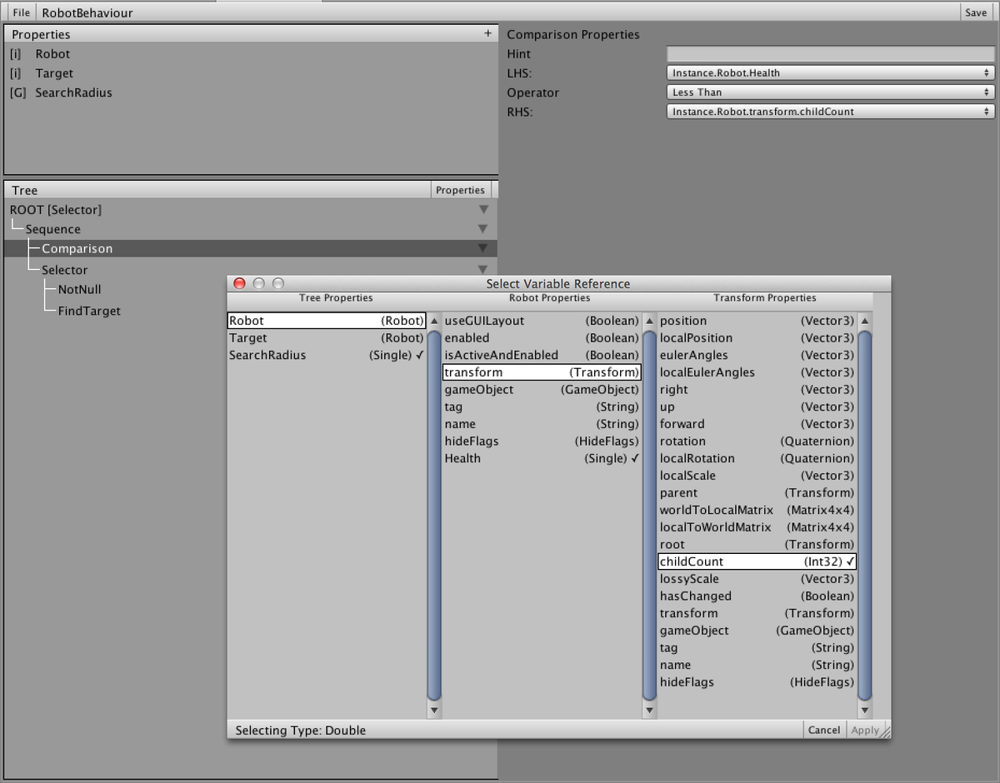

Beck Sebenius


Behaviour Trees are a common tool in an AI Designer’s toolbox. The idea evolved in the 2000’s as a way to define the behavior of an AI agent and has since evolved into a standardized set of terms and techniques used in many industries related to AI. In games, behaviour trees are usually paired with other tools like finite state machines or fuzzy logic.
In this post, I am going to outline the process I took to implement a behaviour tree tool in the Unity3D engine. In talking with colleagues from around the industry, I find that these tools are repeatedly built and re-built and hopefully by reading the summary of my process it can help you build your own.
As with any large project, it’s good to outline the goals you are trying to achieve. With this tool, I wanted to make sure that it had:
Before this process, I had been generally aware of what behaviour trees were used for, but during the research phase I was surprised to learn that there was a high degree of terminology and standard practices that should be followed. Although each implementation appeared to have its own quirks and differences, behaviour trees tools out in the wild tended to follow the same pattern. This was an important factor because I wanted to make sure that a designer coming onto the game team could integrate with our tools with as little learning as possible.
For the sake of this article, I will summarize the general functionality:
With these core concepts, you can put together complex trees that describe a wide variety of behaviours. Neat!
Unity3D uses C# as its runtime language, and so I knew that for the tool to be programmer-friendly it needed to be rooted there. Creating separate assemblies / libraries for behaviour evaluation would be a development drain when most of Unity’s workflow is integrated into their editor.
Ultimately, because this was intended to be a tool and not a coding pattern, I knew that I needed to build out the core architecture of the ‘core’ nodes and provide an easy pattern for programmers to add additional functionality.
Like with many architectural projects, my first instinct was to write a series of base classes for nodes and begin implementing the behaviour. I wanted to make sure that this would be very performant, and I had some experience going this route before so I made sure to do some tests. What I found was that by using objects to define the tree, the entire system was littered with cache misses and would run very slow. This would be a wholly unavoidable performance problem if I went this route.
Another problem that needed to be solved with the architecture was the necessity of defining the tree itself, but being able to assign that behaviour to many agents at the same time. In order to do this, the state data for each agent needed to be pooled to avoid allocating data each time a new instance is created. This complicated the design of the backend a lot, and led me to the next solution.
Generating code is a very dangerous thing to do in any project, but the more I looked at the requirement of the behaviour tree tool the more I realized that it was the right solution. By generating the core functionality I would be able to make micro-optimizations that wouldn’t hinder the workflow for programmers or designers. That said, generating C# code is a big task and not something to take lightly.
There was still a lot of architectural work to do while writing the compiler, and ultimately it came down to this simple class hierarchy:
class BehaviourTree
class BehaviourTreeInstance
class CustomBehaviour : BehaviourTree
class CustomBehaviourInstance : BehaviourTreeInstance
With this hierarchy, the class which derives from BehaviourTree defines the shared data on nodes. These are things like configuration that are not customizable per-instance.
The class which derives from BehaviourTreeInstance then defines things that can be modified per-instance. On the designer side this neeeded to be kept as small as possible to be able to support many instances of the behavior running at the same time.
Writing a compiler is no easy trick. Technically, I’m not sure if this could be called a compiler, but that’s what I went with anyways since it’s compiling data from one format to another.
When starting the compiler I explored a variety of the built-in .NET tools for writing code (runtime Emit, CodeDOM) but ultimately found them unwiedly. I ended up building the compiler from scratch and writing a large set of utility functions for handling things like closures and compiler directives. In hindsight, I’m not sure that I would recommend this because the learning curve for maintaining the system is very high. I think this is true for any code generator, but in this case it was particularly high because of the size of the tool.
The compiler process ended up working in these steps:
Deserialize JSON data into a flat set of nodes
Reformat the flat nodes into an actual recursive tree
Recurse over each node (starting with the root node) writing out the code line by line.
Each node type has its own class, which defines how to write it out. Before calling the ‘CompileBody’ method, the compiler would write out ‘NODE_1F = Failure;’ and it would be the responsibility of the CompileBody method to assign NODE_1F (or whatever the name of the ‘result’ variable was) to something different. In the case of composite nodes, it would compile its own children, evaluate the result of their child, and return a value.
One property of behaviour trees is that it jumps around a lot when evaluating nodes. If a child of a Sequence fails, it needs to immediately pop back up to the parent rather than continuing with evaluation of the next sibling. However, if a Selector node fails, it should continue until it finds a success. In order to handle this, I used the taboo goto syntax quite a bit. Although generally frowned upon in modern programming, goto ended up being a very valuable tool for evaluating the trees.
Here’s a sample of code from a generated tree:
/////////////////////
/// Selector
/////////////////////
NODE _1_;
{
/////////////////////
/// MoveTo
/////////////////////
NODE _2_;
{
ProfilerBeginSample("MoveTo.Tick");
_2_ = (byte)Tree._2__Node.Tick(_2__Properties);
ProfilerEndSample();
}
if(_2_ == Success)
{
_1_ = Success;
goto _1__END;
}
else if(_2_ == Running)
{
_1_ = Running;
goto _1__END;
}
else
{
}
_1_ = Failure;
}
_1__END: // LABEL
One thing that I often see with generated code is that it’s rarely commented, usually not indented properly, and generally doesn’t follow established coding practices. I started that way, too, and I realized very quickly that generated code should follow to the letter your company’s coding practices. I cannot stress enough the importance of making generated code as readable as possible; when debugging a problem with the generated code, an engineer’s life is already made twice as difficult because they’re debugging two pieces of code at once: the generated code, and the code that generated it.
When it comes to behaviour trees, almost all of your game-specific code is written as leaf nodes so that was the natural place to start. Ultimately I found several other entry points that needed coverage and I’ll go over those too.
The process for writing a leaf node with this tool was to create a new class that derives from BehaviourTreeLeafNode. Pretty simple, right?
Wrong!
A key part of writing a good leaf node is that it is a) Atomic, and b) Extensible. A good node is something like “DoesExist”. There shouldn’t be separate nodes for checking the existence of a Soldier vs a Loot Box. This meant that a leaf node should be able to accept a wide variety of inputs, and handle them elegantly.
Using the C# type system, I came up with a scheme that worked pretty well. A leaf node declaration looks something like this:
public class DoesExist : BehaviourTreeLeafNode
{
public interface Properties
{
object target { get; }
}
public BehaviourTreeResult Tick (Properties properties)
{
if(properties.target != null)
{
return BehaviourTreeResult.Success;
}
else
{
return BehaviourTreeResult.Failure;
}
}
}
Note here that the behaviour tree node takes in only an interface and nothing else. Using this method, the leaf node must define specifically what ie needs, and how it can use it.

Of course, the problem here is that someone needs to actually define what data gets plugged in here! This ended up being a great job for the code generator, which would create a class which implements that property to route the data to the correct location. The designer tool has an interface to assign any piece of data they want to the node.
Later in development (after the tool became more ‘battle tested’) we found an entry point that seems very necessary. Sometimes, while running a behaviour tree, it needs to be guarenteed that some ‘cleanup’ for a node is run no matter how execution steps. This means that even if a tree is manually reset, the cleanup needs to be run.
One real-life example is adding modifiers to a given unit. An engineer needed a way to say, “While executing the nodes beneath this node, add a movement speed modifier. The modifier must be removed when no longer within the scope of this node”.
Ultimately the process for writing a scope node ended up being very similar to a Leaf node but with “OnEnter” and “OnExit” methods.
One feature that helped accelerate development quite a lot was the concept of ‘sub-trees’. Sometimes core tree functionality needs to be represented in multiple other trees. An easy way to do this would be to store a reference to another behaviour tree instance, but ultimately that leads to the same cache-miss problems that I was initially trying to avoid. Instead, I wanted to be able to inline a tree into another tree so that there would be no performance loss. This was important because I wanted to encourage designers to create atomic trees that they can re-use across many other trees.
A huge problem that I ran into early in development with this tool was the problem of code compatability. Take the above DoesExist node example. What happens if I need to add a property to the interface?
Do so, and immediately you have a whole host of problems - all of the behaviour trees that were generated using that node are no longer fulfilling the requirements of the interface. The last thing I wanted an engineer to have to do is manually update generated code as changes were made.
Enter ‘Compatability Mode’. In the Unity editor, a compiler directive is active called ‘BT_COMPATABILITY_MODE’. When this is only, every reference to external code that’s compiled into the behaviour tree is obfuscated with reflection. Yes, every reference. Example:
NODE _8_;
{
ProfilerBeginSample("DetectTarget.Tick");
#if BT_COMPATABILITY
_8_ = (byte)Tree._8__Node.GetType().GetMethod("Tick").Invoke(Tree._8__Node, new object[]{ _8__Properties_Cache });
#else
_8_ = (byte)Tree._8__Node.Tick(_8__Properties);
#endif
ProfilerEndSample();
}
Sure, this code is much slower and will probably fail if you try to run it after changing the type signature, but the code will compile which is very important. If the code doesn’t compile, then the property type is not updated, and the code generator can’t update the code.
Although somewhat painful to program on the backend, this addition to the compiler ended up being invaluable. A ‘recompile all’ button was later added to the editor so that programmers could quickly recompile behaviour trees after a breaking change was made.

The ability to debug AI behaviours is almost more important than debugging code. I found early on that without a way to look back at the history of the entire tree, it would be impossible to discover and fix logic problems. Nodes could be mis-run and by the time you’re able to inspect it, the AI agent has moved on to a whole new state.
Another advantage of generating the code was that debugging hooks could easily be added to the tree structure itself. So, when a tree debugger is attached and the ‘BT_DEBUG’ directive is active, the tree sends messages to the debugger. The debugger records each node’s state and saves it in a historical window that is accessible by the UI. In the UI, a time slider is available to step backwards in time to see how an AI came to a given decision.
As mentioned above, a goal of the tool was to make sure that using behaviour trees did not necessitate any runtime allocations, and the best way to do this in C# is with object pooling. Since this was such a common use case that would exist in any project, I ended up integrating it into the behaviour tree system itself. Each tree type would automatically create a pool of instances with an initialize count determined by the tree’s configuration settings. There was also an option that would remove this from the compiled code in cases where the tree itself would never be instanced and was intended to be used as a sub-tree.
Our primary game project at Valkyrie Entertainment has a lot of autonomous AI agents, and this tool was an important part of creating and debugging their behaviours. Behaviour Trees are not the best tool for every job, but they can be a very powerful one when used in conjunction with other tools.
Writing tools like these is an important part of freeing up the intelligent minds of other game developers to work on creative tasks rather than being bogged down with the details. When trying to express the behaviour of an agent, it’s important that the engineers and designers arent spending their time doing ‘boilerplate’ work - AI is difficult enough as it is!
Building a code generator can be a huge undertaking. In this case, the results more than justified the means, but it shouldn’t be taken lightly all of the various pieces that needed to be built. Without debugging, compatability safety, built-in pooling, or the wide featureset that was created for this, it would probably have cost more time than it saved.
As always, hit me up on twitter or email if you have questions.